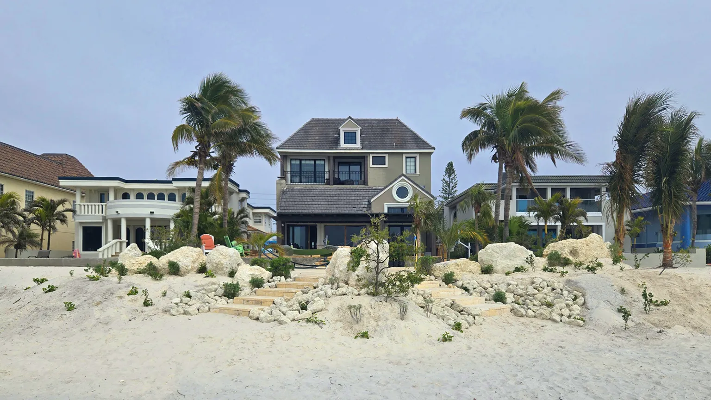

Homes & GardensCoastal Resilience is the Next Big Luxury Landscape Trend
Living Spaces Gardening founder Kiamesha Wray was featured alongside top landscape designers in this piece on coastal resilience landscaping. Two project photos were published. Kiamesha was quoted on living shorelines, cluster planting, and dune restoration strategy for Florida coastal properties.
"Opting for a living shoreline rather than a seawall, or cluster planting your trees, are some impactful decisions you can make that will have a positive impact on how a site will fare in a severe weather event."
Kiamesha Wray, Homes & Gardens, Nov 2025
Kiamesha spoke to native planting for storm resilience, specimen tree placement and landscape design, living shorelines, and dune restoration — work that spans both Living Spaces Gardening and Living Restorations.